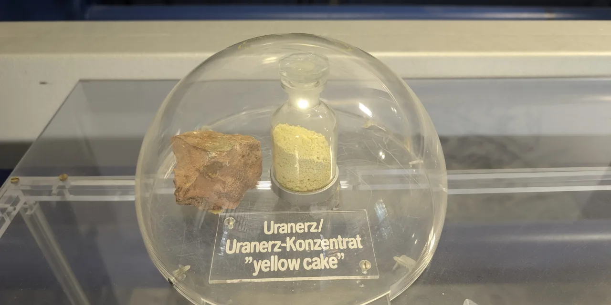

우라늄 로열티 UROY를 볼 때 가장 많이 나오는 말은 “광산을 직접 운영하지 않으니 채굴주보다 안전하지 않나”입니다. 반은 맞고 반은 위험한 말입니다. UROY는 광산을 짓고, 인력을 고용하고, 지하수 허가를 받고, 원가 초과를 직접 감당하는 회사는 아닙니다. 하지만 우라늄 가격이 내려가고, 로열티가 붙은 광산의 생산이 늦어지고, 새 거래를 위해 주식이 많이 발행되면 주주는 여전히 손실을 볼 수 있습니다.
이 회사는 우라늄 가격에 노출되는 방식이 조금 다릅니다. 카메코처럼 우라늄을 캐서 파는 회사도 아니고, 넥스젠처럼 거대한 개발 프로젝트가 승인되기를 기다리는 회사도 아닙니다. UROY는 우라늄 실물 재고, 로열티 권리, 우라늄 관련 기업 투자, 그리고 2026년에 발표한 Sweetwater Royalties 결합을 통해 우라늄 사이클에 올라타려는 회사입니다. 그래서 이 종목은 “우라늄 가격이 오를까”보다 “이 구조가 주주에게 현금으로 바뀔까”를 먼저 봐야 합니다.
특히 2026년의 UROY는 예전 UROY와 다릅니다. 회사가 Sweetwater 결합을 완료하면 단순한 우라늄 실물·로열티 옵션주가 아니라, 소다회 로열티 현금흐름과 우라늄 옵션을 함께 가진 로열티 플랫폼으로 바뀔 수 있습니다. 이 변화가 성공하면 회사는 더 커지고 안정적인 현금흐름을 얻을 수 있습니다. 반대로 투자자가 기대한 “순수 우라늄 베팅”의 색깔은 옅어질 수 있습니다.
UROY는 광산을 안 파지만 가격 위험은 피하지 못합니다

회사 설명과 2025년 MD&A를 보면 UROY의 기본 전략은 우라늄 로열티, 스트림 후보, 우라늄 기업의 부채와 지분, 물리적 우라늄 보유를 통해 우라늄 가격에 노출되는 것입니다. 즉 주주가 사는 것은 광산 하나가 아니라 우라늄 가격과 여러 권리를 묶은 바구니에 가깝습니다.
2025년 4월 30일 기준 회사는 우라늄 재고 2억1,750만 캐나다달러를 보유했습니다. 전년의 1억8,710만 캐나다달러보다 커졌습니다. 이 숫자는 UROY의 매력을 설명하는 동시에 위험도 설명합니다. 우라늄 가격이 오르면 재고는 강한 자산이 됩니다. 그러나 가격이 내려가면 재고 가치는 바로 압박을 받습니다. 광산 운영비가 없다는 말이 가격 위험까지 없다는 뜻은 아닙니다.
2025 회계연도에는 순손실 570만 캐나다달러가 났습니다. 전년에는 순이익 980만 캐나다달러였습니다. 이 차이는 UROY를 일반 성장주처럼 보면 안 된다는 신호입니다. 이 회사의 손익은 우라늄 실물 매입과 매각, 보관료, 로열티 수취 시점, 투자자산 가치, 운영비에 따라 흔들립니다. 매출 성장률 하나로 판단하기 어려운 종목입니다.
그렇다고 UROY가 의미 없다는 뜻은 아닙니다. 오히려 우라늄 광산 개발의 시간과 원가 리스크를 직접 지기 싫지만, 우라늄 가격 상승과 장기 공급 부족에는 노출되고 싶은 투자자에게는 흥미로운 구조입니다. 다만 그 흥미로움은 “편하다”가 아니라 “복잡하지만 다르게 움직인다”에 가깝습니다.
Sweetwater 결합은 우라늄주가 아니라 플랫폼 시험입니다
관련 영상
UROY 우라늄 로열티 투자 포인트를 설명하는 한국어 롱폼 영상
2026년 4월 UROY는 Orion Resource Partners와 Ontario Teachers' Pension Plan이 보유한 Sweetwater Royalties 92% 지분 보유 법인과 결합하는 계약을 발표했습니다. 회사 발표 기준 Sweetwater 100% 기업가치는 약 19억 달러로 제시됐고, UROY가 취득하는 지분가치는 약 11억 달러로 설명됐습니다.
여기서 주주가 놓치기 쉬운 점이 있습니다. Sweetwater는 이름만 보면 우라늄 자산처럼 느껴질 수 있지만, 핵심은 와이오밍 Green River Basin의 소다회 로열티와 대규모 토지·광물권입니다. 발표 자료 기준 Sweetwater는 약 85만 에이커의 fee surface rights와 약 450만 에이커의 mineral rights를 보유한 로열티 플랫폼이며, 최근 2개 회계연도 100% 기준 평균 조정 EBITDA가 약 7,400만 달러였다고 회사가 밝혔습니다.
이 거래가 중요한 이유는 UROY에 현금흐름의 축을 줄 수 있기 때문입니다. 기존 UROY는 우라늄 재고와 로열티 권리가 있어도 당장 매 분기 안정적으로 큰 현금흐름을 만드는 구조는 아니었습니다. Sweetwater가 결합되면 소다회 로열티 현금흐름이 들어오고, 그 현금흐름을 바탕으로 우라늄 로열티를 추가로 사는 전략이 가능해집니다. 이 시나리오가 맞으면 UROY는 더 큰 로열티 플랫폼으로 재평가될 수 있습니다.
하지만 이 거래는 공짜가 아닙니다. 거래 대금, 주식 발행, 새 지배구조, 기존 주주와 신규 대형 주주의 이해관계가 모두 중요합니다. UEC는 2026년 5월 UROY subscription receipts 4,000만 달러 사모 투자를 마감했습니다. 이 자금은 거래 조건 충족 전까지 escrow에 보관됩니다. 주주는 “대형 투자자가 들어왔다”만 볼 것이 아니라, 이 거래가 완료된 뒤 기존 주주의 몫이 얼마나 남고, 현금흐름이 얼마나 빨리 보이는지를 봐야 합니다.
UROY의 숫자는 생산량보다 순자산과 희석입니다
카메코를 볼 때는 생산량, 판매 가격, 장기계약, 원가를 봅니다. 넥스젠을 볼 때는 프로젝트 승인과 개발비를 봅니다. UROY는 다릅니다. 먼저 봐야 할 것은 순자산가치입니다. 우라늄 재고 가치, 로열티 권리 가치, 보유 현금, 투자자산, 거래 후 부채와 주식 수를 합쳐 주당 가치가 어떻게 변하는지 봐야 합니다.
2025년 4월 30일 기준 UROY의 운전자본은 2억3,700만 캐나다달러였습니다. 겉으로는 재무 여력이 있어 보입니다. 하지만 Sweetwater 결합 이후에는 훨씬 큰 회사가 됩니다. 거래 구조에는 현금 대가와 주식 대가가 섞여 있고, Orion과 Ontario Teachers' 같은 판매자가 결합 후 큰 지분을 보유할 수 있습니다. 이것은 나쁜 일이 아닐 수도 있습니다. 장기 기관투자자가 들어오면 안정성이 커질 수 있기 때문입니다. 다만 기존 주주 입장에서는 희석과 지배구조 변화를 반드시 계산해야 합니다.
두 번째로 봐야 할 것은 로열티 현금화 시간표입니다. UROY는 Cigar Lake, McArthur River, Langer Heinrich, Roughrider, Reno Creek 같은 자산과 연결된 로열티 권리를 보유합니다. 이름만 보면 매우 강해 보입니다. 그러나 로열티마다 조건이 다릅니다. 어떤 권리는 생산이 재개되어야 하고, 어떤 권리는 누적 비용이 회수된 뒤에야 의미 있는 수익이 나타납니다. 그래서 “좋은 광산 이름이 붙어 있다”와 “UROY 주주에게 현금이 들어온다”는 같은 말이 아닙니다.
세 번째는 보관료와 운영비입니다. 실물 우라늄을 보유하면 가격 상승 노출을 얻지만 보관료가 듭니다. 2025 회계연도 우라늄 보관료는 전년보다 증가했습니다. 이것은 작은 숫자처럼 보일 수 있지만, 아직 반복 현금흐름이 충분하지 않은 회사에는 중요한 비용입니다. 우라늄 가격이 빠르게 오르면 문제가 덜 보이지만, 가격이 횡보하면 비용은 더 눈에 띕니다.
결국 UROY의 숫자는 생산량 표보다 자산가치 표에 가깝습니다. 투자자는 우라늄 재고 가치, 현금, 로열티 권리, Sweetwater EBITDA, 순부채, 발행 주식 수를 한 화면에 놓고 봐야 합니다. 이 표가 좋아지면 주가는 우라늄 가격보다 더 크게 반응할 수 있습니다. 이 표가 나빠지면 우라늄 가격이 올라가도 기대만큼 움직이지 않을 수 있습니다.
카메코·UEC·넥스젠과 비교하면 역할이 다릅니다
UROY를 이해하는 가장 쉬운 방법은 같은 우라늄 테마 안에서 역할을 나눠 보는 것입니다. 카메코는 대형 생산자입니다. 이미 운영 중인 광산과 장기계약, 핵연료 밸류체인 노출을 갖고 있습니다. 우라늄 가격 상승에 노출되지만, 생산 차질과 원가, 계약 가격도 함께 봐야 합니다. 안정성과 규모 면에서는 UROY보다 훨씬 직접적입니다.
UEC는 미국 우라늄 공급망 재건 기대를 받는 생산·개발 회사입니다. UROY와도 관계가 있습니다. UEC는 UROY 지분을 보유하고 있고, 2026년 Sweetwater 거래와 연결된 subscription receipt 투자도 했습니다. UEC를 보면 미국 내 생산 재개와 정책 수혜를 더 직접적으로 보는 것이고, UROY를 보면 그 주변의 로열티와 자본 배치 구조를 보는 것입니다.
넥스젠은 대형 개발 프로젝트 옵션에 가깝습니다. Rook I 같은 고품질 자산이 승인과 개발 단계를 통과하면 가치가 크게 달라질 수 있습니다. 대신 개발 일정, 허가, 자본비, 건설 리스크가 큽니다. UROY는 이런 개발 리스크를 직접 짊어지는 구조는 아니지만, 개발 자산이 실제 생산으로 이어지기 전까지 현금흐름이 늦어질 수 있다는 점에서는 비슷한 기다림을 요구합니다.
따라서 UROY가 가장 유망하다고 말하려면 조건이 붙습니다. 우라늄 가격이 강하고, Sweetwater 결합이 마무리되고, 결합 후 현금흐름이 추가 우라늄 로열티 매입으로 이어지며, 주식 희석이 주당 가치 증가보다 작아야 합니다. 이 네 가지가 동시에 맞으면 UROY는 독특한 우라늄 로열티 플랫폼으로 보일 수 있습니다. 하나라도 어긋나면 그냥 복잡한 우라늄 테마주로 남을 수 있습니다.
결론: 우라늄 가격보다 거래 종결 후 첫 숫자가 중요합니다
UROY를 한 문장으로 정리하면 이렇습니다. “광산을 직접 운영하지 않는 우라늄 노출 상품처럼 보이지만, 실제 투자 포인트는 실물 우라늄 재고와 Sweetwater 결합 후 현금흐름이 주당 가치로 연결되는지입니다.” 그래서 지금 주주가 가장 먼저 확인할 것은 우라늄 가격 차트가 아닙니다. Sweetwater 거래가 계획대로 종결되는지, 결합 후 pro forma 재무제표가 어떻게 나오는지, 새 주식 수와 순부채가 어디까지 늘어나는지입니다.
긍정적인 경우 UROY는 우라늄 가격 상승기마다 자산가치가 커지고, Sweetwater 현금흐름으로 추가 로열티를 사며, 원전 공급망 재건 테마에서 독특한 위치를 차지할 수 있습니다. 이 경우 회사는 채굴주와 우라늄 실물 펀드 사이의 중간 선택지가 됩니다. 운영 리스크는 상대적으로 낮고, 자본 배치가 좋으면 장기 복리 구조가 만들어질 수 있습니다.
부정적인 경우도 분명합니다. 우라늄 가격이 약해지고, Sweetwater 거래가 지연되거나 조건이 나빠지고, 추가 financing으로 기존 주주 몫이 줄면 UROY의 장점은 흐려집니다. 또한 Sweetwater가 소다회 로열티 현금흐름을 주더라도, 시장이 UROY에 기대한 순수 우라늄 프리미엄을 그대로 줄지는 알 수 없습니다. 더 커진 회사가 반드시 더 좋은 주식이라는 뜻은 아닙니다.
따라서 UROY를 보유하거나 새로 보려는 투자자라면 다음 네 줄을 계속 업데이트해 보셔야 합니다. 첫째, 우라늄 재고와 현금의 현재 가치입니다. 둘째, Sweetwater 거래 종결과 결합 후 EBITDA입니다. 셋째, 발행 주식 수와 기존 주주 희석입니다. 넷째, UROY가 새로 사는 우라늄 로열티의 가격과 품질입니다. 이 네 줄이 좋아질 때 UROY의 이야기는 테마에서 사업으로 넘어갑니다.
이 글은 특정 가격의 매수나 매도를 권하는 글이 아닙니다. UROY는 흥미로운 회사이지만 단순한 회사는 아닙니다. 우라늄 가격이 오를 것 같다는 생각만으로 접근하기보다, 회사가 그 가격 상승을 주당 현금흐름과 순자산가치로 바꾸는지 확인하는 편이 더 안전합니다. UROY의 핵심 질문은 “우라늄이 오르느냐”가 아니라 “이 회사가 우라늄 사이클을 주주 몫으로 얼마나 잘 번역하느냐”입니다.